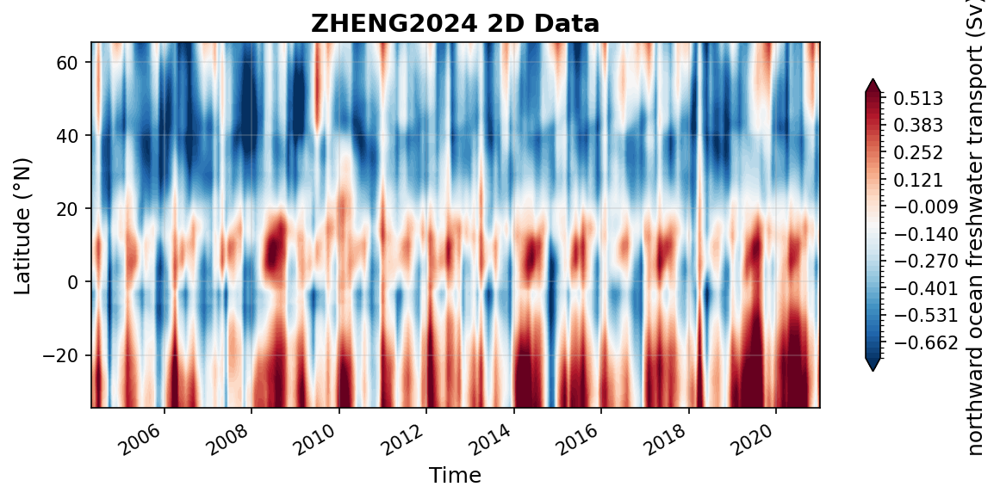

ZHENG2024 Datasets
atl_mft_2000_extend_gpcp_oaflux.nc
Dataset Overview
Project: An observation based estimate of the Atlantic meridional freshwater transport
Description: An observation based estimate of the Atlantic meridional freshwater transport
Source File: atl_mft_2000_extend_gpcp_oaflux.nc
Data Product: An observation based estimate of the Atlantic meridional freshwater transport
License: CC-BY-4.0
Time Coverage: 2004-04-30 to 2020-12-31
Record Length: 201 observations (16.7 years)
Sampling Frequency: monthly
Distribution Statement:
This dataset is publicly available. We kindly request that you cite the following reference in any publications that use this data.
Citation:
Zheng, H. (2024). An observation-based estimate of the Atlantic meridional freshwater transport [Data set]. Zenodo. https://doi.org/10.5281/zenodo.12790901
Acknowledgement:
“This study was supported by the National Natural Science Foundation of China (Grant 42122046, 42076202, 42075036), National Key Scientific and Technological Infrastructure project “Earth System Science Numerical Simulator Facility” (EarthLab) and the new Cornerstone Science Foundation through the XPLORER PRIZE. F. Li acknowledges the financial support from the National Key R&D Program of China (Grant 2023YFF0805102). Gratitude is extended to Elaine L. McDonagh, who graciously shared RAPID freshwater transport data.”
Dataset Visualization
{kind=link}

Time series plot for ZHENG2024 dataset.
Dataset Statistics
Total Variables: 1
Total Coordinates: 2
Dataset Size: 0.16 MB
Coordinate Information
The following table shows information about the dataset coordinates in the standardised version, including coordinate name remapping from the original, if any:
Coordinate |
Description |
Units |
Size |
Min Value |
Max Value |
Missing % |
|---|---|---|---|---|---|---|
lat → LATITUDE |
Latitude: Latitude north (WGS84) |
degree_north |
(101,) |
-34.50 |
65.50 |
0.0% |
time → TIME |
Time: Time in datetime format |
seconds since 1970-01-01T00:00:00Z |
(201,) |
2004-04-30 |
2020-12-31 |
0.0% |
Variable Information
The following table shows the mapping from original variable names to standardized names, along with key statistics for each variable.
Variable |
Description |
Units |
Size |
Min Value |
Max Value |
Missing % |
|---|---|---|---|---|---|---|
mft → MFT |
northward ocean freshwater transport: An Observation-Based Estimate of Atlantic Meridional Freshwater Transport. AMFT given by RAPID array at 26.5°N was integrated southward and northward in combination with ocean freshwater content (calculated by salinity) and surface freshwater flux, with the residual of the freshwater budget equation being the AMFT. |
sverdrup |
(201, 101) |
-0.98 |
0.92 |
0.0% |
Metadata (edits applied noted)
The following metadata describes this dataset:
Summary: An observation based estimate of the Atlantic meridional freshwater transport
Description*: An observation based estimate of the Atlantic meridional freshwater transport
Program*: amft
Project*: An observation based estimate of the Atlantic meridional freshwater transport
License*: CC-BY-4.0
Acknowledgment*: “This study was supported by the National Natural Science Foundation of China (Grant 42122046, 42076202, 42075036), National Key Scientific and Technological Infrastructure project “Earth System Science Numerical Simulator Facility” (EarthLab) and the new Cornerstone Science Foundation through the XPLORER PRIZE. F. Li acknowledges the financial support from the National Key R&D Program of China (Grant 2023YFF0805102). Gratitude is extended to Elaine L. McDonagh, who graciously shared RAPID freshwater transport data.”
References*: Zheng, H., Cheng, L., Li, F., Pan, Y., & Zhu, C. (2024). An observation-based estimate of Atlantic meridional freshwater transport. Geophysical Research Letters, 51, e2024GL110021. https://doi.org/10.1029/2024GL110021
Weblink*: https://zenodo.org/records/12790901
Distribution Statement*: This dataset is publicly available. We kindly request that you cite the following reference in any publications that use this data.
Data Product*: An observation based estimate of the Atlantic meridional freshwater transport
Time Coverage Start*: 2004-04-30
Time Coverage End*: 2020-12-31
Contributor Name*: Huayi Zheng, Lijing Cheng, Feili Li, Yuying Pan, Chenyu Zhu
Contributor Role*: originator, principalInvestigator, coAuthor, coAuthor, coAuthor
Contributor Role Vocabulary*: https://vocab.nerc.ac.uk/collection/G04/current/
Contributor Email*: zhenghuayi23@mails.ucas.ac.cn, chenglij@mail.iap.ac.cn, , ,
Contributor Id*: https://orcid.org/0009-0004-5333-7595, https://orcid.org/0000-0002-9854-0392, https://orcid.org/0000-0002-3073-9813, https://orcid.org/0000-0001-7694-2625, https://orcid.org/0000-0002-9330-4294
Contributing Institutions*: Institute of Atmospheric Physics, Chinese Academy of Sciences
Contributing Institutions Vocabulary*: https://edmo.seadatanet.org/report/2452,
Contributing Institutions Role: ,
Conventions*: CF-1.8, ACDD-1.3, OceanSITES-1.5
featureType*: timeSeries
featureType_vocabulary: https://cfconventions.org/cf-conventions/v1.6.0/cf-conventions.html#_features_and_feature_types
Source File*: atl_mft_2000_extend_gpcp_oaflux.nc
Source Path*: ~/.amocatlas_data/atl_mft_2000_extend_gpcp_oaflux.nc
Source Url*: https://zenodo.org/records/12790901
Date Modified: 2026-08-01T00:00:00Z
Processing Software: http://github.com/AMOCcommunity/amocatlas
Processing Version: v0.4.0
Processing Datasource*: zheng2024
Applied Variable Mapping: {‘time’: ‘TIME’, ‘lat’: ‘LATITUDE’, ‘mft’: ‘MFT’, ‘TIME’: ‘TIME’, ‘MFT’: ‘MFT’}
Comment*: Salinity observations used in this study are from the Institute of Atmospheric Physics (IAP). Argo floats, CTD salinity sensors, bottles, mooring, sourced from the World Ocean Database (WOD). Precipitation and evaporation observations are derived from the Global Precipitation Climatology Project (GPCP).